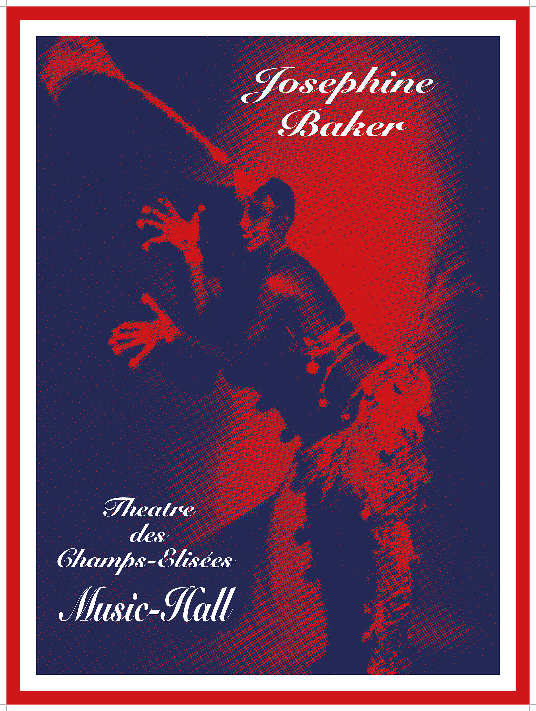
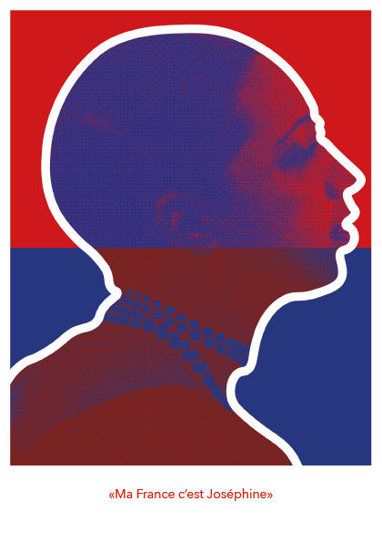
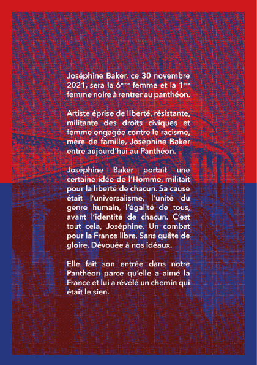
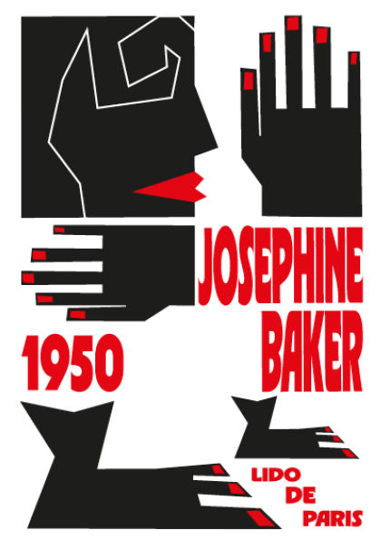
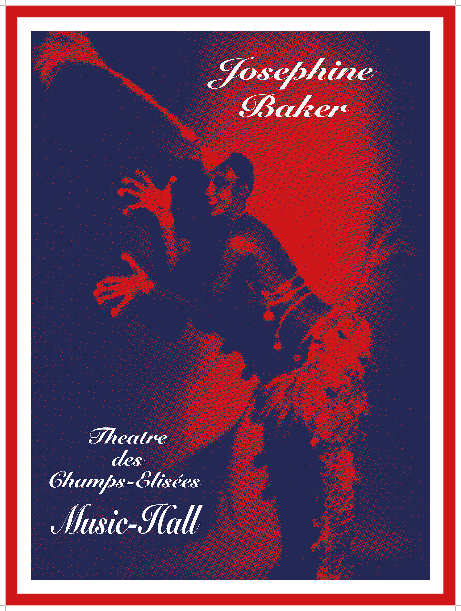
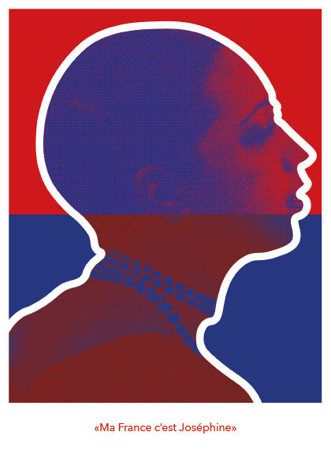
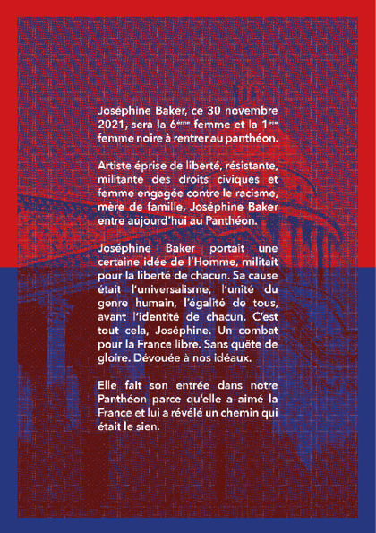
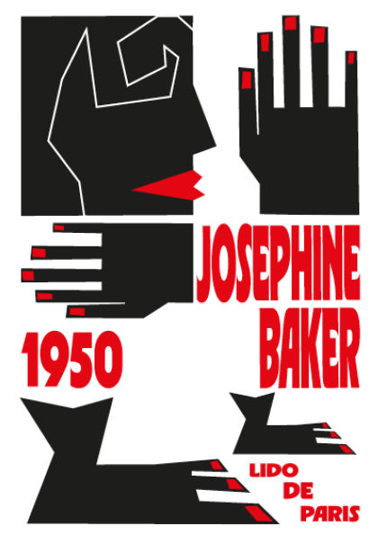
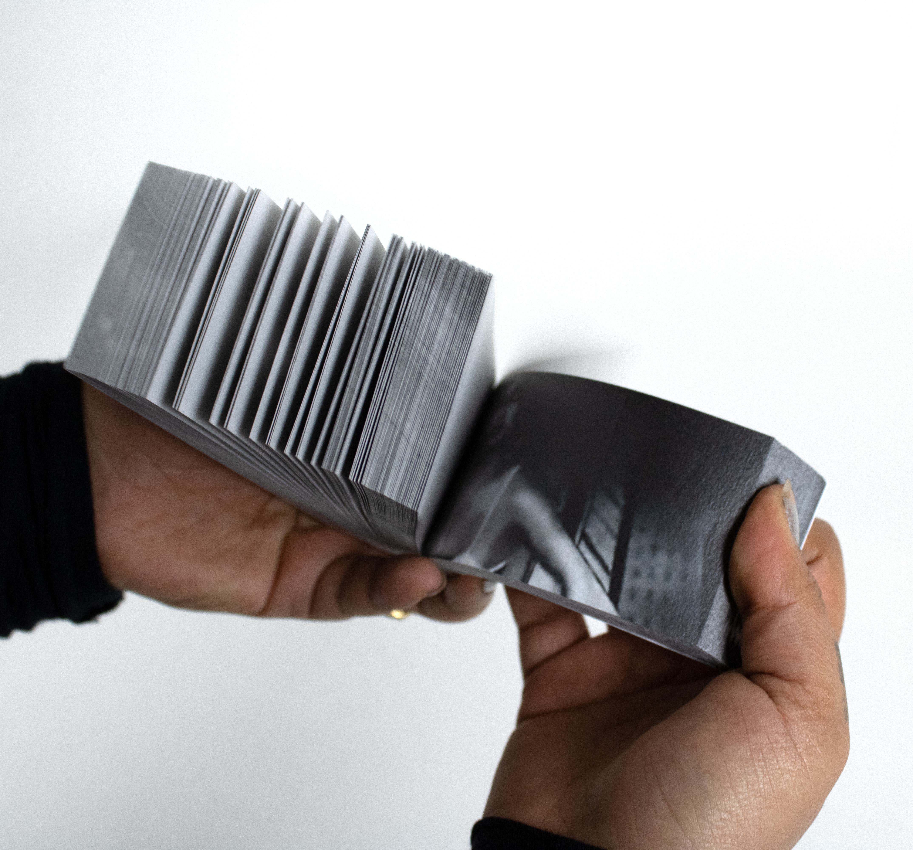
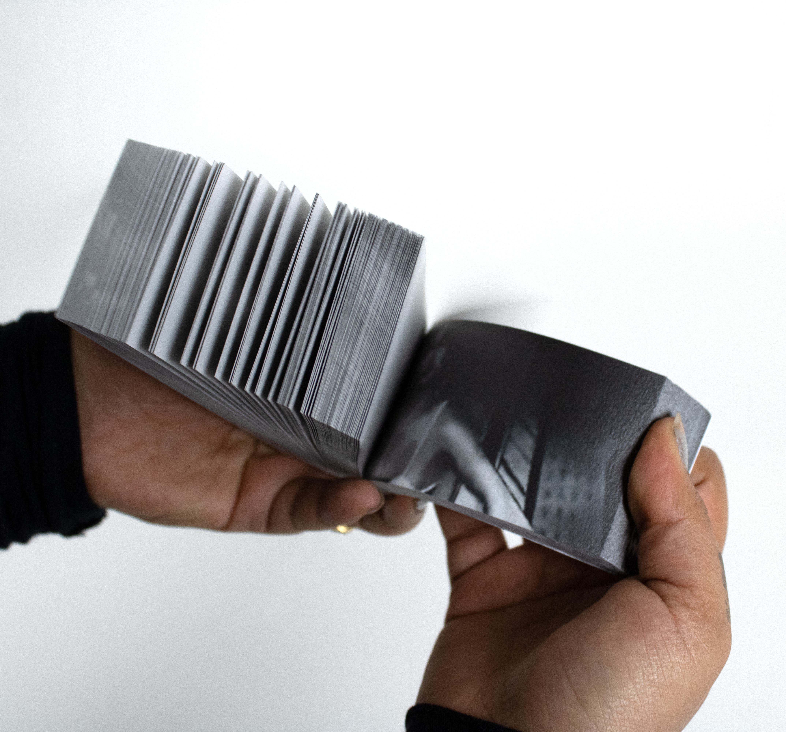

 

Pour ce projet, nous devions choisir un artiste et réaliser son coffret. J’ai choisi Joséphine Baker car, malgré les obstacles liés à sa couleur de peau, elle a su marquer l’Histoire, que ce soit par ses performances artistiques, son engagement auprès de la France ou encore son rôle de mère. Dans ce coffret, vous trouverez : une affiche pour une exposition fictive, des posters inspirés de ceux de ses spectacles, dont j’ai conservé certains éléments (format, couleurs, photographies…) pour mieux les réinterpréter à mon style, des flyers célébrant sa panthéonisation, un flipbook reprenant l’une de ses danses, ainsi qu’une édition retraçant sa vie.